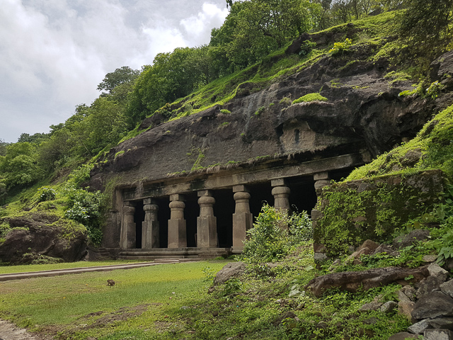
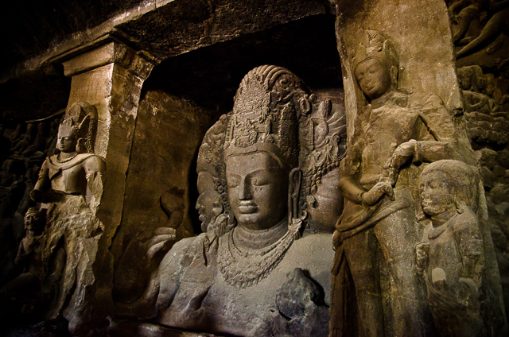

ELEPHANTA
CAVES


The Elephanta Caves are a collection of cave temples predominantly dedicated to the Hindu god Shiva, which have been designated a UNESCO World Heritage Site.They are on Elephanta Island, or Gharapuri (literally meaning "the city of caves"),in Mumbai Harbour, 10 kilometres (6.2 mi) east of Mumbai in the Indian state of Mahārāshtra. The island, about 2 kilometres (1.2 mi) west of the Jawaharlal Nehru Port, consists of five Hindu caves, a few Buddhist stupa mounds that date back to the 2nd century BCE,and two Buddhist caves with water tanks.
The Elephanta Caves contain rock-cut stone sculptures, mostly in high relief, that show syncretism of Hindu and Buddhist ideas and iconography.The caves are hewn from solid basalt rock. Except for a few exceptions, much of the artwork is defaced and damaged.The main temple's orientation as well as the relative location of other temples are placed in a mandala pattern.The carvings narrate Hindu mythologies, with the large monolithic 5.45 metres (17.9 ft) Trimurti Sadashiva (three-faced Shiva), Nataraja (Lord of dance) and Yogishvara (Lord of Yoga) being the most celebrated.
Elephanta Island, or Gharapuri, is about 11 km (6.8 mi) east of the Gateway of India in the Mumbai Harbour and less than 2 km (1.2 mi) west of Jawaharlal Nehru Port. The island covers about 10 km2 (3.9 sq mi) at high tide and about 16 km2 (6.2 sq mi) at low tide. Gharapuri is a small village on the south side of the island.The Elephanta Caves is connected by ferry services from the Gateway of India, Mumbai between 9AM and 2PM daily, except Monday when the Caves are closed. Mumbai has a major domestic and international airport, as well as is connected to the Indian Railways.
The island has two groups of rock-cut caves, hewn from solid basalt rock. The larger group of caves, which consists of five caves on the western hill of the island, is well known for its Hindu sculptures. The primary cave, numbered as Cave 1, is about 1.0 km (0.62 mi) up a hillside, facing the Mumbai harbour. Caves 2 through 5 are next to Cave 1 further southeast, arranged in a row. Cave 6 and 7 are about 200 m (660 ft) northeast of Cave 1 and 2, but geologically on the edge of the eastern hill.The two hills are connected by a walkway. The eastern hill is also called the Stupa hill, while the western hill is called the Canon hill, reflecting their historic colonial-era names, the ancient Stupa and the Portuguese era firing Canons they host respectively.
How to reach
Nearby Places
The Park Hotels Navi Mumbai
Hotel Aishwarya Residency